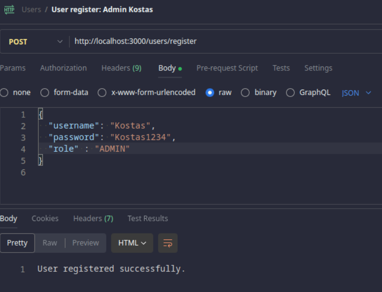
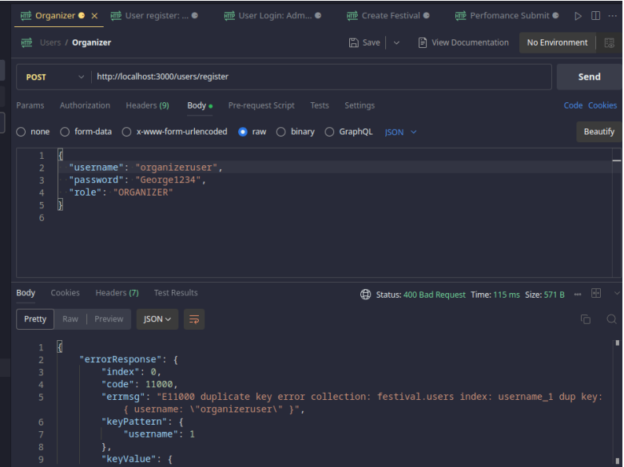
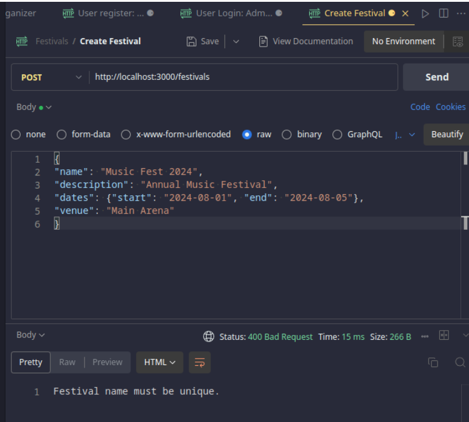
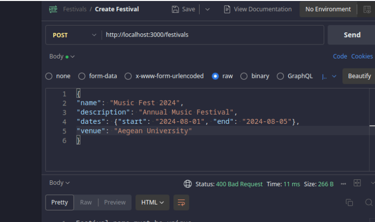
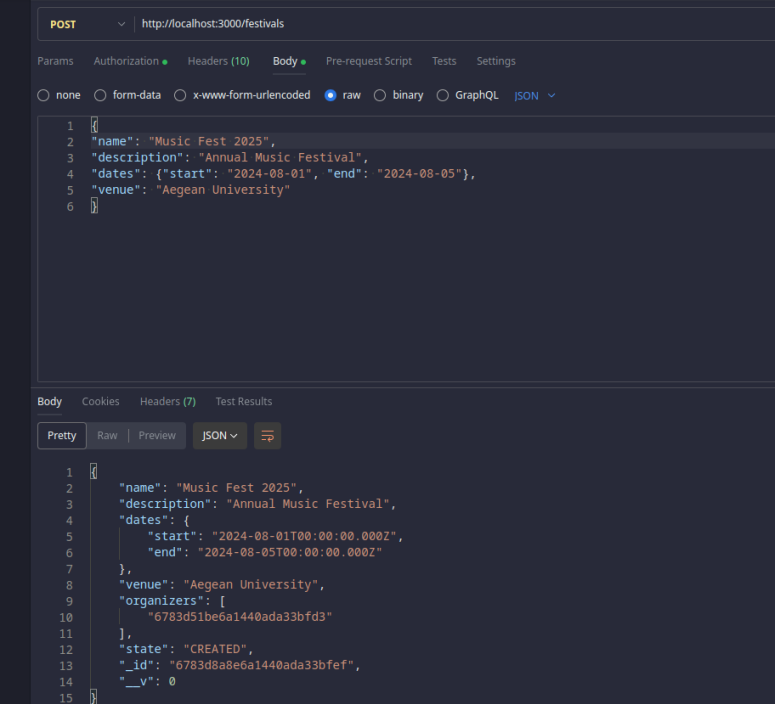

About This Project
This project is for another lesson in full-stack web programming. It was built using HTML, CSS, JavaScript, and PHP.
HTML & CSS 70%
JavaScript 50%
PHP 40%
Key Features:
- ✔ Feature 1: Fully working clinic site
- ✔ Feature 2: Different permissions depending on the role (doctor, secretary, patient)
- ✔ Feature 3: With a few changes, it can be implemented for a real-life office




